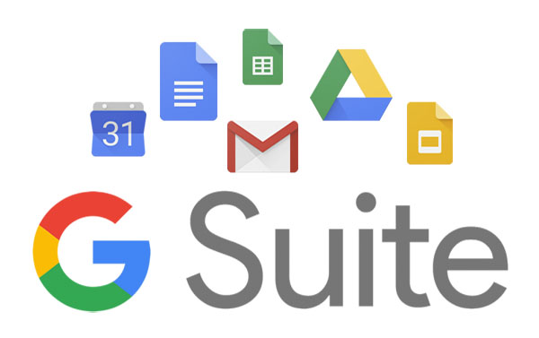

El entorno de Google
Google es una empresa en constante evolución que nos ofrece muchos servicios de utilidad en la red. La mayoría son gratuitos y destacan por ser potentes, intuitivos y fáciles de usar. Esto ha contribuido a que sus aplicaciones se conviertan en las favoritas de los usuarios de todo el mundo. Este “gigante” de la informática además de contar con un navegador propio (Google Chrome) y un sistema operativo (Android) para dispositivos móviles, no deja de experimentar y ofrecer productos nuevos y renovados. En el campo educativo, estas herramientas están facilitando nuevos planteamientos en el aula, cambios en la metodología y un trabajo mas adaptado a la era digital que estamos viviendo.
Google Drive
Google drive es un sistema que permite almacenar archivos de manera segura y acceder a ellos desde cualquier dispositivo. Ofrece 15 GB de espacio de almacenamiento gratuito y ofrece la posibilidad de ampliarlo mediante planes de pago mensuales.
Gmail
Gmail o Google mail es un servicio de correo electrónico gratuito proporcionado por el motor de búsqueda Google. Está disponible en más de 50 idiomas y se financia mediante publicidad. Con Gmail, los mensajes de correo electrónico se pueden enviar y recibir a través de una interfaz de navegador en un equipo doméstico.
Classroom
Google Classroom es la herramienta que une la enseñanza y el aprendizaje en un solo lugar. Una herramienta segura y fácil de usar que ayuda a los educadores a administrar, medir y enriquecer las experiencias de aprendizaje.
Google Meet
Google Meet es un servicio de videotelefonía desarrollado por Google. Es una de las dos aplicaciones que constituyen la nueva versión de Hangouts, siendo la otra Google Chat
Google ha puesto las videoconferencias de nivel empresarial a disposición de todo el mundo. Ahora, cualquier persona que tenga una cuenta de Google puede crear una reunión online con hasta 100 participantes y reunirse durante 60 minutos por sesión.